The \(\chi^2\) distribution is used with multinomial data (i.e., when the categorical variable has more than two categories) to test whether observed frequency counts differ from expected frequency counts.
\(H_0\): Proportions are all the same
\(H_A\): Proportions are all the same
\[\chi^{2} = \displaystyle\sum\limits_{i}\dfrac{\left(Observed_i - Expected_i \right)^2}{Expected_i}\]
\(\chi^2\) distributed with \(\left( \text{no. of categories}-1 \right)\) degrees of freedom \((\textit{df})\)
Reject \(H_0\) if \(P-value \leq \alpha\); Do not reject \(H_0\) otherwise
As \(df \to \infty\) you need a larger \(\chi^2\) to Reject \(H_0\) at the same \(\alpha\)
Note: The plot below shows how the theoretical \(\chi^2\) distribution varies with the degrees of freedom. As the distribution shifts right the degrees of freedom are getting smaller. The first
is for 3 degrees of freedom, which means we have a total of 4 categories, then we have 4 degrees of freedom (so 5 categories), then 5 degrees of freedom (so 6 categories), and finally 6 degrees of freedom (i.e., 7 categories). Note what happens; The more the degrees of freedom, the larger the \(\chi^2\) value needed to reject \(H_0\) with \(\alpha=0.05\) or \(\alpha=0.01\).
plot(density(x), col="goldenrod", lwd=1, bty="n",
xlim=c(0,20), ylim=c(0,0.35),
xlab=expression(chi^2),
ylab="Probability",
main="The Chi-square distribution with df=(3, 4, 5, and 6)")
abline(h=0.05, col="red", lty=6)
abline(h=0.01, col="red", lty=3)
par(new=TRUE)
lines(density(x1), col="pink", lty=2)
par(new=TRUE)
lines(density(x2), col="brown", lty=1)
par(new=TRUE)
lines(density(x3), col="dodgerblue4", lty=5)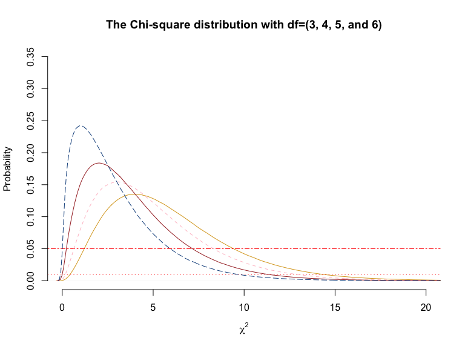
The test is built on two assumptions:
Assume that there are four gourmet meats placed before 100 subjects. In a blind taste test each subject is asked to pick the item they liked the most. Do subjects exhibit indifference between the four items? If they do, then we would expect about 25% to pick item A, 25% to pick item B, 25% to pick item C, and 25% to pick item D. If \(H_0\) were true then expected frequencies would be as follows for A, B, C, and D:
expected = c(25, 25, 25, 25)Now assume that the 100 subjects actually indicated the following preferences for A, B, C, and D:
observed = c(30, 10, 40, 20)Notice that we see the observed frequencies differing from what we expected to see if \(H_0\) were true (i.e., there were no clear preferences). Of course, some of this drift between expected and observed frequencies could be by chance. Therefore we would need to test and see whether the overall difference is enough to suggest that this could not happen by chance very often or if it could happen very often. In other words, do the data suggest that subjects do prefer some items over the others. We will set \(\alpha = 0.05\) and then conduct the test.
tab.0 = cbind(observed, expected) # binds observed & expected
tab.0 ## observed expected
## [1,] 30 25
## [2,] 10 25
## [3,] 40 25
## [4,] 20 25Xsq = chisq.test(observed, p=c(0.25, 0.25, 0.25, 0.25))
Xsq##
## Chi-squared test for given probabilities
##
## data: observed
## X-squared = 20, df = 3, p-value = 0.0001697Given that the \(P-value\) is less than \(\alpha=0.05\) we can reject the \(H_0\) that the items are equally preferred. That is, the data suggest that some items are preferable to others. Before we walk away though, let us see if any of the two assumptions are violated.
The answer is no to both since we saw the expected frequencies were 30, 10, 40, and 20. So no assumptions are being violated.
What if the observed preferences were instead more like the ones below?
expected = c(25, 25, 25, 25)
observed = c(22, 28, 20, 30)
tab.1 = cbind(observed, expected)
tab.1## observed expected
## [1,] 22 25
## [2,] 28 25
## [3,] 20 25
## [4,] 30 25Xsq.2 = chisq.test(observed, p=c(0.25, 0.25, 0.25, 0.25))
Xsq.2##
## Chi-squared test for given probabilities
##
## data: observed
## X-squared = 2.72, df = 3, p-value = 0.4368In this case we would be unable to reject \(H_0\) since the p-value is 0.4368, not \(\leq 0.05\). Why did this happen? Because the total difference between expected and observed frequencies was not drastic enough to yield a large \(\chi^2\) value that would have been associated with a small probability of occurrence by chance.
We will work with the data on births per day of the week in 1999 and conduct the goodness-of-fit test. The substantive question here is whether the proportion of births is distributed equally across the seven days of the week. Let us read in the data to begin with.
births = read.csv(url("http://whitlockschluter.zoology.ubc.ca/wp-content/data/chapter08/chap08e1DayOfBirth.csv"))
tab.A = table(births); tab.A## births
## Friday Monday Saturday Sunday Thursday Tuesday Wednesday
## 56 41 47 33 47 63 63tab.B = prop.table(tab.A); tab.B## births
## Friday Monday Saturday Sunday Thursday Tuesday
## 0.16000000 0.11714286 0.13428571 0.09428571 0.13428571 0.18000000
## Wednesday
## 0.18000000Table = cbind(tab.A, tab.B); Table## tab.A tab.B
## Friday 56 0.16000000
## Monday 41 0.11714286
## Saturday 47 0.13428571
## Sunday 33 0.09428571
## Thursday 47 0.13428571
## Tuesday 63 0.18000000
## Wednesday 63 0.18000000barplot(tab.A, ylim=c(0,70), xlab="Day of the Week", ylab="Frequency", main="Bar Chart of the day of the week for 350 births in the U.S. (1999)", cex.names=0.8)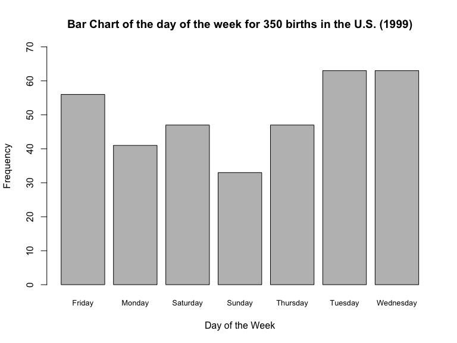
Table shows us how many births occurred on a given day of the week. Note that both the Table and the barplot ignore the order of the days of the week. We can fix this and have the days ordered in terms of Sunday through Saturday:
births$day = factor(births$day, levels=c("Sunday", "Monday", "Tuesday", "Wednesday", "Thursday", "Friday", "Saturday"))
tab.A = table(births); tab.A## births
## Sunday Monday Tuesday Wednesday Thursday Friday Saturday
## 33 41 63 63 47 56 47tab.B = prop.table(tab.A); tab.B## births
## Sunday Monday Tuesday Wednesday Thursday Friday
## 0.09428571 0.11714286 0.18000000 0.18000000 0.13428571 0.16000000
## Saturday
## 0.13428571Table = cbind(tab.A, tab.B); Table## tab.A tab.B
## Sunday 33 0.09428571
## Monday 41 0.11714286
## Tuesday 63 0.18000000
## Wednesday 63 0.18000000
## Thursday 47 0.13428571
## Friday 56 0.16000000
## Saturday 47 0.13428571barplot(tab.A, ylim=c(0,70), xlab="Day of the Week", ylab="Frequency", main="Bar Chart of the day of the week for 350 births in the U.S. (1999)", cex.names=0.8)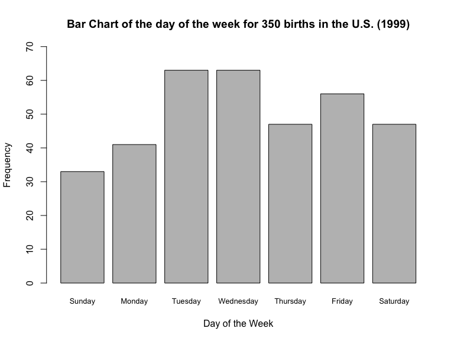
Before we go any farther, we’ll have to ask: In 1999, did Sundays occur as often as Mondays or Tuesdays, etc.? Turns out there were 365 days in 1999, with 53 Fridays and 52 Sundays, 52 Mondays, 52 Tuesdays, 52 Wednesdays, 52 Thursdays, and 52 Saturdays. By chance alone, then, we should have expected to see, of the 350 births in that week, \[\frac{53}{365} \times 350 =50.82192\]
births on Friday. This logic then dictates that we would have expected to see \[\frac{52}{365} \times 350=49.86301\] births on Sunday, Monday, Tuesday, Wednesday, Thursday, and Saturday, each.
We can go through the manual calculations for the discrepancy between observed and expected births on each day but we will lean on R’s built-in functions to do this for us. First we setup the hypotheses and the decision rule.
\(H_0: \text{ The probability of a birth is the same on every day of the week}\)
\(H_A: \text{ The probability of a birth is not the same on every day of the week}\)
\(\alpha=0.05\)
\(\text{Reject } H_0 \text{ if } P-value \leq \alpha; \text{Do not reject } H_0 \text{ otherwise}\)
Xsq = chisq.test(tab.A, p=c(52/365, 52/365, 52/365, 52/365, 52/365, 53/365, 52/365))
Xsq##
## Chi-squared test for given probabilities
##
## data: tab.A
## X-squared = 15.057, df = 6, p-value = 0.01982Notice what we did here. We specified the probabilities of seeing a birth on each day of the week (as calculated earlier). Otherwise R will assume that the probability is just 1/7 on each day, and that would be incorrect.
Note: You could have also specified the expected proportions via chisq.test(tab.A, p = c(52,52,52,52,52,53,52)/365))
The calculated \(\chi^{2}[df=6]=15.057\) and has a \(P-value=0.01982\) so we reject \(H_0\); the data provide sufficient evidence to conclude that the probability of a birth is not the same on every day of the week. Note what would have happened had we chosen a decision rule with \(\alpha=0.01\) … we would have been unable to reject \(H_0\) because the p-value of 0.01982 would be greater than \(\alpha=0.01\)
I am showing you a couple of things that can be extracted from the test we just ran in R.
objects(Xsq)## [1] "data.name" "expected" "method" "observed" "p.value" "parameter"
## [7] "residuals" "statistic" "stdres"Xsq$expected## Sunday Monday Tuesday Wednesday Thursday Friday Saturday
## 49.86301 49.86301 49.86301 49.86301 49.86301 50.82192 49.86301Xsq$expected shows the expected frequencies calculated for the test.
In that case you could run the \(\chi^2\) test but it will be less precise than using the Binomial test for proportions. Below I skip the usual hypotheses and decision rules in favor of a quick comparative demonstration of the binomial test versus the \(\chi^2\) test for a two-category variable. The example we are using is of the percentage of human genes on the X chromosome which, if \(H_0\) is true, should be 0.052 (i.e., 5.2%).
First the binomial test:
genes = read.csv(url("http://whitlockschluter.zoology.ubc.ca/wp-content/data/chapter08/chap08e4XGeneContent.csv"))
head(genes)## chromosome
## 1 X
## 2 X
## 3 X
## 4 X
## 5 X
## 6 Xtab.1 = table(genes); tab.1## genes
## NotX X
## 19509 781binom.test(781, 20290, p=0.052, alternative="two.sided", conf.level=0.95)##
## Exact binomial test
##
## data: 781 and 20290
## number of successes = 781, number of trials = 20290, p-value <
## 2.2e-16
## alternative hypothesis: true probability of success is not equal to 0.052
## 95 percent confidence interval:
## 0.03588645 0.04123056
## sample estimates:
## probability of success
## 0.03849187library(binom)
binom.confint(781, n = 20290, conf.level=0.95, method = "ac")## method x n mean lower upper
## 1 agresti-coull 781 20290 0.03849187 0.03592951 0.04122894Note that we rejected \(H_0\) because \(p-value \leq 0.05\). Obviously the 95% confidence interval does not include \(p_0 = 0.052\); the hypothesis test and the confidence interval are, again, symmetric in that sense.
Now the \(\chi^2\) test:
p.H0 = 0.052
p.HA = 1 - 0.052
xsq = chisq.test(tab.1, p=c(p.HA, p.H0)); xsq##
## Chi-squared test for given probabilities
##
## data: tab.1
## X-squared = 75.104, df = 1, p-value < 2.2e-16The inefficient way to do the same test would be via the \(\chi^2\) test. In the end it does not matter since here too we end up soundly rejecting \(H_0\). However, we will always default to the binomial test if we have only two outcomes. If we have more than two outcomes (i.e., a multinomial outcome) we will settle for the \(\chi^2\) test.
Is the sex of consecutive children independent in humans? Does having one boy change the probability of the next child also being a boy? We looked at this with decision trees in Chapter 5. Here we use data compiled by Rodgers and Doughty (2011) to test for independence – whether the sex of the first child influences (or not) the sex of the second child.
families = read.csv(url("http://whitlockschluter.zoology.ubc.ca/wp-content/data/chapter08/chap08e5NumberOfBoys.csv"))
head(families)## numberOfBoys
## 1 0
## 2 0
## 3 0
## 4 0
## 5 0
## 6 0tab.2 = table(families); tab.2## families
## 0 1 2
## 530 1332 582We can think of any birth as a “trial”, with some probability of a boy being born and its complement being the probability of a girl being born. Here we ask, if I track two-child families, and count how many boys these families have, how often am I going to see no boys, 1 boy, or two boys? The hypotheses will be structured as follows:
\(H_0: \text{ No. of Boys in two-child families follows the binomial distribution}\)
\(H_A: \text{ No. of Boys in two-child families does not follow the binomial distribution}\)
How many children do we have here? Think carefully … There are 2444 two-child families so the total number of children in the sample has to be 4888. How many boys do we have? \(1332 + \left(2 \times 582\right)=\) 2496. As a result we know that the probability of randomly drawing a boy out of 4888 children from two-child families must be \(\frac{2496}{4888}=\) 0.5106383. If this were the true probability of seeing a boy in any randomly chosen birth, how often would we see 0 boys, 1 boy, 2 boys? The binomial distribution can tell us:
x = seq(0, 2, by=1) # create a sequence that goes from 0 boys to 1 boy to 2 boys
p.boy = 2496/4888 # probability of a boy being born
y = dbinom(x, 2, p = p.boy) #
y ## [1] 0.2394749 0.4997737 0.2607515sum(y) ## [1] 1chisq.test(tab.2, p=y)##
## Chi-squared test for given probabilities
##
## data: tab.2
## X-squared = 20.021, df = 2, p-value = 4.492e-05We have a slight problem though: We had to estimate the probability of seeing a boy being born from the sample. Because we snooped at the data, got this probability, and then used it to generate the expected frequencies, we have to pay the price by reducing the degrees of freedom by 1. This forces us to not use the p-value from the chisq.test() result but instead calculate it manually:
1 - pchisq(20.021, df=1)## [1] 7.659634e-06Since our calculated \(\chi^2\) has a very low \(p-value\) we can reject \(H_0\). The data provide sufficient evidence to conclude that the distribution of the number of boys and girls in two-child families does not follow the binomial distribution. What does this mean? This means that somehow the probability of having a son or daughter appears to vary across families, maybe having a boy does influence the chance of having another boy or a girl, or something else is going on here that violates one of the the assumptions of the binomial distribution – that what happens in one trial has no bearing on what happens in the next trial.
In this case we could just use this probability to generate expected number of families with 0, 1, or 2 boys, and that would obviate any need to adjust the degrees of freedom.
x = seq(0, 2, by=1) # create a sequence that goes from 0 boys to 1 boy to 2 boys
p.boy = 0.512 # probability of a boy being born
y = dbinom(x, 2, p = p.boy) #
y ## [1] 0.238144 0.499712 0.262144sum(y) ## [1] 1chisq.test(tab.2, p=y)##
## Chi-squared test for given probabilities
##
## data: tab.2
## X-squared = 20.059, df = 2, p-value = 4.407e-05The conclusion is the same; we soundly reject \(H_0\) and conclude that the number of boys in two-child families does not follow the binomial distribution.
In passing, note that we can always calculate what is the Critical \(\chi^2\) value we need to pass in order to reject the \(H_0\) with a given \(df\) and at a set \(\alpha\). A good way to think about this critical value is that if our calculated \(\chi^2\) equals or exceeds the critical value then the p-value must be
qchisq(0.95, df=1) ## [1] 3.841459qchisq(0.95, df=3) ## [1] 7.814728qchisq(0.95, df=6) ## [1] 12.59159qchisq(0.99, df=3)## [1] 11.34487qchisq(0.99, df=6)## [1] 16.81189plot(density(x), col="goldenrod", lwd=3, bty="n",
xlim=c(0,20), ylim=c(0,0.35),
xlab=expression(chi^2),
ylab="Probability",
main="The Chi-square distribution with df=(3, 4, 5, and 6)")
abline(h=0.05, col="red", lty=6)
abline(h=0.01, col="red", lty=3)
par(new=TRUE)
lines(density(x1), col="pink", lty=2)
par(new=TRUE)
lines(density(x2), col="darkgreen", lty=4)
par(new=TRUE)
lines(density(x3), col="dodgerblue4", lty=5)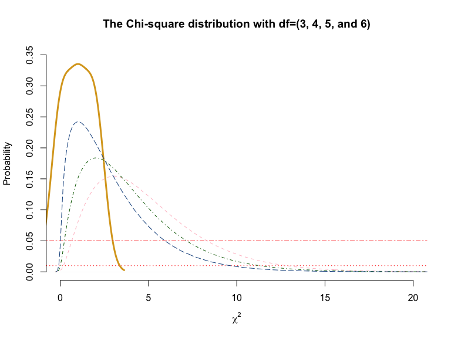
A common perception is that people suffering from chronic illnesses may be able to delay their deaths until after a special event, like Christmas. Out of 12,028 deaths from cancer in either week before or after Christmas, 6052 happened in the week before Christmas. Use these data to test whether the holiday affects death rates.
First some basic calculations to create the vector of observed frequencies.
death.before = 6052
death.after = 12028 - 6052
observed = rbind(death.before, death.after)
observed## [,1]
## death.before 6052
## death.after 5976Let us assume that deaths before and deaths after are identically distributed. The hypotheses will then be as follows:
\(H0:\) Proportion of deaths before and after major holidays (like Christmas) are the same
\(HA:\) Proportion of deaths before and after major holidays (like Christmas) are NOT the same
Let us also set \(\alpha = 0.01\)
Now, if \(H_0\) is true, what number of deaths would we have expected to see before and after Christmas? Well that would be one-half of 12028 each … i.e., 6014 deaths before and 6014 deaths after Christmas, respectively … that is, with probabilities of \(0.5\) and \(0.5\), each.
Now we can use the chi-square test.
chisq.test(observed, p=c(0.5, 0.5))##
## Chi-squared test for given probabilities
##
## data: observed
## X-squared = 0.48021, df = 1, p-value = 0.4883Given a p-value of 0.48021 we cannot reject \(H_0\); the data provide insufficient evidence to conclude that holidays affect death rates.
One thousand coins are flipped eight times and the number of heads recorded for each coin. Does the resulting distribution of heads match that expected from a binomial distribution with all fair coins?
Assuming all the coins are fair implies equal probabilities of seeing a Heads or a Tails on any given flip.
coins = read.csv(url("http://whitlockschluter.zoology.ubc.ca/wp-content/data/chapter08/chap08q6CoinFlipping.csv"))
head(coins)## numberOfHeads
## 1 0
## 2 0
## 3 0
## 4 0
## 5 0
## 6 0names(coins)## [1] "numberOfHeads"tab.1 = table(coins); tab.1## coins
## 0 1 2 3 4 5 6 7 8
## 6 32 105 186 236 201 98 33 103In a binomial distribution what would we expect to see?
n = 8; n## [1] 8num.heads = seq(0, 8, by=1); num.heads## [1] 0 1 2 3 4 5 6 7 8y = dbinom(num.heads, n, p=0.5); y## [1] 0.00390625 0.03125000 0.10937500 0.21875000 0.27343750 0.21875000
## [7] 0.10937500 0.03125000 0.00390625expected = round(y * 1000, digits=0); expected## [1] 4 31 109 219 273 219 109 31 4Two of the nine cells (i.e., 22.22% of the cells) have expected frequencies \(< 5\) … for 0 heads and for 8 heads. This means we will need to regroup the data so as not to violate one of the assumptions of the \(\chi^2\) test.
new.heads = seq(0, 8, by=1); new.heads## [1] 0 1 2 3 4 5 6 7 8new.coins = c( sum(tab.1[1:2]),
tab.1[3:7],
sum(tab.1[8:9]) )
names(new.coins) = c("0 or 1", "2", "3", "4", "5", "6", "7 or more")
new.coins## 0 or 1 2 3 4 5 6 7 or more
## 38 105 186 236 201 98 136n = 8
y = dbinom(new.heads, n, p=0.5); y## [1] 0.00390625 0.03125000 0.10937500 0.21875000 0.27343750 0.21875000
## [7] 0.10937500 0.03125000 0.00390625prob.1 = sum(y[1:2])
prob.2 = y[3:7]
prob.3 = sum(y[8:9])
probs = c(prob.1, prob.2, prob.3); probs## [1] 0.03515625 0.10937500 0.21875000 0.27343750 0.21875000 0.10937500
## [7] 0.03515625xsq = chisq.test(new.coins, p=probs)
xsq##
## Chi-squared test for given probabilities
##
## data: new.coins
## X-squared = 302.32, df = 6, p-value < 2.2e-161 - pchisq(302.3219, df=5)## [1] 0The \(p-value\) is practically \(0\) so we can safely reject \(H_0\); the distribution of these coin flips does not follow the binomial distribution.
How do the expected counts differ from the observed counts? Look at the plots that follow and compare the observed number of heads versus expected number of heads. Where do you see discrepancies?
par(mfcol=c(1,2))
x = seq(0, 8, by=1)
plot(tab.1, type="h",
lwd = 3, col="darkred",
xlab="Number of Heads",
ylab=expression(P(X==x)),
main="Observed")
plot(expected, type="h",
lwd = 3, col="darkblue",
xlab="Number of Heads",
ylab=expression(P(X==x)),
main="Expected", xaxt="n")
axis(side=1, at=x)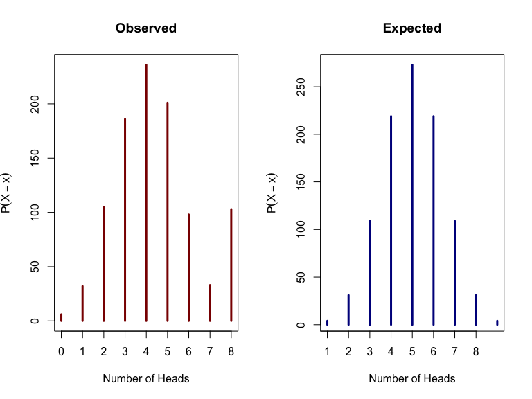
par(mfcol=c(1,1))We ended up with some 103 instances of 8 heads. With fair coins this should have only happened 4 times (… this is what was originally calculated as the expected frequency). As such we may have had \(103 - 4 =99\) two-headed coins
The Poisson distribution describes the number of successes that will occur in space or time if the number of successes are independent across consecutive space or time and occur with equal probability in each space or time. It is a useful distribution if our goal is to test whether or not events occur randomly in space and/or time because if they do, then the Poisson distribution would characterize these events quite well.
\[P(X) = \dfrac{e^{-\mu} \mu^{X}}{X!}; \text{where } X=0,1,2,3,\ldots, n; \text{and Mean }= \text{Variance } = \mu\]
where \(X=\) the number of events in a given time interval or space; \(\mu=\) the mean number of events per time interval or space; and \(P(X)=\) the probability of observing exactly \(X\) events in a given interval.
For example: Hospital births occur on average at 1.8 births per hour. What is \(P(X=4)\)?
\[P(X=4) = \dfrac{e^{-1.8}(1.8)^4}{4!} = 0.0723\]
In terms of a concrete context, if I am monitoring the Richland Avenue roundabout,
Successes may be clumped – in that success in one space or time increases the chance of seeing a success in the subsequent space or time or dispersed – in that success in one space or time decreases the chance of seeing a success in the subsequent space or time.
+ An example of clumping may be where a highway fatality increases the chances of other highway fatalities occurring shortly after the first fatality. Most likely the case when the \(variance > mean\)
+ An example of dispersion may be where a highway fatality decreases the chances of seeing other highway fatalities shortly after the first fatality. Most likely the case when the \(variance < mean\)
The distribution shown below is for 100 randomly drawn values from a Poisson distribution with \(\lambda=3\)
set.seed(124)
pois = rpois(100, lambda = 3)
mean(pois)## [1] 2.83var(pois)## [1] 2.344545The code below is purely for demonstrating some properties of the Poisson distribution. Various Poisson distributions follow. Note how the distributions shift to the right as \(\lambda\) increases.
x = seq(0, 20, by=1)
par(mfrow=c(2,2))
plot(x, dpois(x, lambda=1),
type = "h", lwd=2, col="tomato2",
ylab = expression(P(X==x)),
xlab="No. of Events (x)",
main = expression(mu==1),
ylim=c(0,0.4))
plot(x, dpois(x, lambda=3),
type = "h", lwd=2, col="tomato2",
ylab = expression(P(X==x)),
xlab="No. of Events (x)",
main = expression(mu==3),
ylim=c(0,0.4))
plot(x, dpois(x, lambda=5),
type = "h", lwd=2, col="tomato2",
ylab = expression(P(X==x)),
xlab="No. of Events (x)",
main = expression(mu==5),
ylim=c(0,0.4))
plot(x, dpois(x, lambda=8),
type = "h", lwd=2, col="tomato2",
ylab = expression(P(X==x)),
xlab="No. of Events (x)",
main = expression(mu==8),
ylim=c(0,0.4))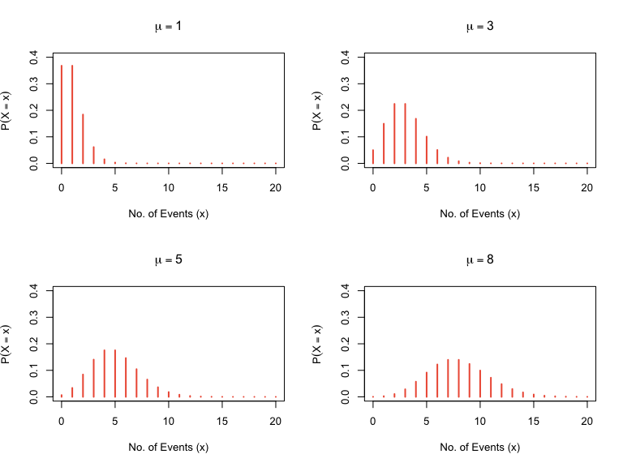
par(mfrow=c(1,1))Note: The binomial distribution tends towards the Poisson distribution as sample size \((n)\) increases and probability of success \(p()\) decreases
par(mfrow=c(3,2))
barplot(dbinom(0:20, size= 5, prob=3/5),
names.arg=0:20, ylim=c(0, 0.4),
main=expression(paste(n==5 ~ ~ p==0.6)))
barplot(dbinom(0:20, size=10, prob=1/5),
names.arg=0:20, ylim=c(0, 0.4),
main=expression(paste(n==10 ~ ~ p==0.2)))
barplot(dbinom(0:20, size=20, prob=1/10),
names.arg=0:20, ylim=c(0, 0.4),
main=expression(paste(n==20 ~ ~ p==0.1)))
barplot(dbinom(0:20, size=40, prob=1/10),
names.arg=0:20, ylim=c(0, 0.4),
main=expression(paste(n==40 ~ ~ p==0.1)))
barplot(dpois(0:20, lambda=2),
names.arg=0:20, ylim=c(0, 0.4),
main=expression(paste(n==20 ~ ~ mu==2)))
barplot(dpois(0:40, lambda=4),
names.arg=0:40, ylim=c(0, 0.4),
main=expression(paste(n==40 ~ ~ mu==4)))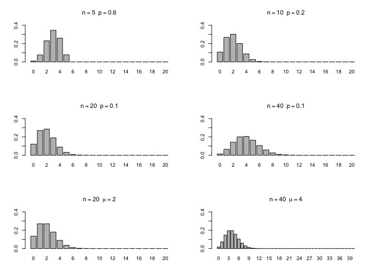
par(mfrow=c(1,1))Note: The Poisson distribution tends towards the Normal distribution as the mean increases
par(mfrow=c(2,2))
x=rpois(10000, 1)
hist(x, col="cornflowerblue",
xlab=expression(X==x),
ylim=c(0,4000),
main=expression(mu==1))
x=rpois(10000, 5)
hist(x, col="cornflowerblue",
xlab=expression(X==x),
ylim=c(0,4000),
main=expression(mu==5))
x=rpois(10000, 10)
hist(x, col="cornflowerblue",
xlab=expression(X==x),
ylim=c(0,4000),
main=expression(mu==10))
x=rpois(10000, 100)
hist(x, col="cornflowerblue",
xlab=expression(X==x),
ylim=c(0,4000),
main=expression(mu==100))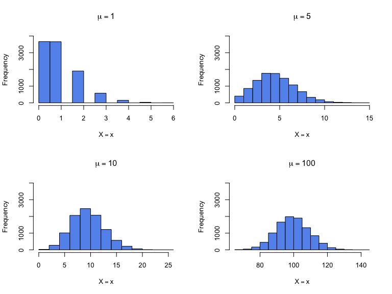
par(mfrow=c(1,1))So what do these properties tell us? In brief, that under certain conditions we would get practically identical results when testing hypotheses about Poisson-generated data as we might from the Binomial or from the Normal, depending upon which of the above properties is in effect.
Just like for the binomial, R has built-in functions for calculating the probability of seeing a certain number of successes, given the population mean \((\lambda)\).
x = seq(0, 14, by=1)
d.x = dpois(x, lambda=5, log=FALSE); d.x## [1] 0.0067379470 0.0336897350 0.0842243375 0.1403738958 0.1754673698
## [6] 0.1754673698 0.1462228081 0.1044448630 0.0652780393 0.0362655774
## [11] 0.0181327887 0.0082421767 0.0034342403 0.0013208616 0.0004717363p.x = ppois(x, lambda=5, lower.tail=FALSE); p.x## [1] 0.9932620530 0.9595723180 0.8753479805 0.7349740847 0.5595067149
## [6] 0.3840393452 0.2378165370 0.1333716741 0.0680936347 0.0318280573
## [11] 0.0136952686 0.0054530919 0.0020188516 0.0006979900 0.0002262537barplot(d.x, names.arg=0:14, ylim=c(0,.4))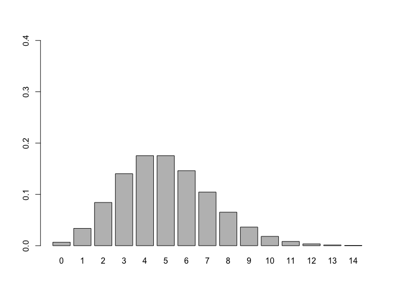
Do extinctions occur randomly through the long fossil record of Earth’s history or are there periods in which the extinction rates are unusually high (“mass extinctions”) compared with background rates? We can test this hypothesis via data on the number of recorded extinctions of marine invertebrate families in 76 time intervals. If mass extinctions are indeed random in time then the distribution should follow the Poisson, with any departures from the Poisson suggesting that something must have been going on.
\[H_0: \text{Number of extinctions follow the Poisson distribution }\] \[H_A: \text{Number of extinctions DO NOT follow the Poisson distribution }\]
extinct = read.csv(url("http://whitlockschluter.zoology.ubc.ca/wp-content/data/chapter08/chap08e6MassExtinctions.csv"))
head(extinct)## numberOfExtinctions
## 1 1
## 2 1
## 3 1
## 4 1
## 5 1
## 6 1names(extinct)## [1] "numberOfExtinctions"tab.A = table(extinct); tab.A # Note missing "0" here versus the text## extinct
## 1 2 3 4 5 6 7 8 9 10 11 14 16 20
## 13 15 16 7 10 4 2 1 2 1 1 1 2 1mean(extinct$numberOfExtinctions)## [1] 4.210526plot(tab.A, ylim=c(0,20), xaxt="n", type="h", xlab="Number of Mass Extinctions", ylab="Frequency", col="firebrick", cex.axis=0.8)
at = seq(from = 0, to = 20, by = 1)
axis(side = 1, at = at, cex.axis=0.8)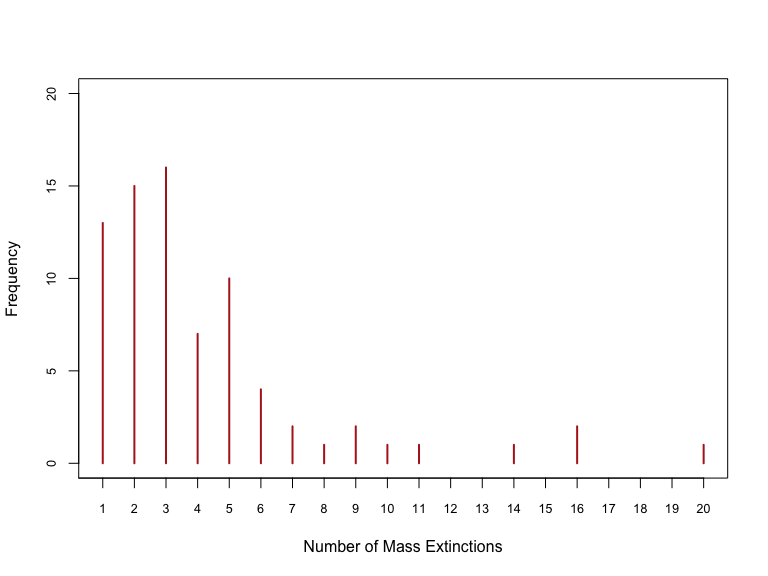
This is all good but we need to estimate the population mean \((\lambda)\) of mass extinctions. Since we only have these particular sample data to go by, that is precisely what we will use to get \(\hat{\lambda}\) and treat this \(\hat{\lambda} = \lambda\).
As it turns out, \(\lambda=\) 4.2105263
Given \(\lambda\), we can now calculate the probability of seeing no mass extinctions, 1 mass extinctions, 2 mass extinctions, and so on if indeed mass extinctions follow a Poisson distribution with a mean of 4.210526.
x = seq(0, 20, by=1)
plot(x, dpois(x, lambda=4.210526), ylim=c(0,0.25),
type = "h", lwd=3, col="tomato4",
ylab = expression(P(X==x)),
xlab="No. of Extinctions",
main = "Expected No. of Mass Extinctions",
cex.main=0.99)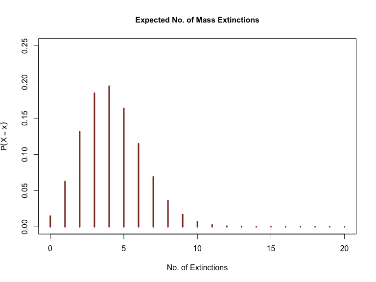
x.d = dpois(x, lambda=4.210526); x.d## [1] 1.483856e-02 6.247815e-02 1.315329e-01 1.846076e-01 1.943238e-01
## [6] 1.636411e-01 1.148358e-01 6.907418e-02 3.635483e-02 1.700811e-02
## [11] 7.161307e-03 2.741170e-03 9.618139e-04 3.115187e-04 9.368982e-05
## [16] 2.629889e-05 6.920761e-06 1.714120e-06 4.009638e-07 8.885623e-08
## [21] 1.870657e-08x.p = ppois(x, lambda=4.210526, lower.tail = TRUE); x.p## [1] 0.01483856 0.07731671 0.20884964 0.39345725 0.58778104 0.75142211
## [7] 0.86625794 0.93533212 0.97168695 0.98869505 0.99585636 0.99859753
## [13] 0.99955934 0.99987086 0.99996455 0.99999085 0.99999777 0.99999949
## [19] 0.99999989 0.99999998 1.00000000Thus, in a random sample of 76 successive time intervals we would expect to see
x.d*76 ## [1] 1.127731e+00 4.748339e+00 9.996503e+00 1.403018e+01 1.476861e+01
## [6] 1.243672e+01 8.727523e+00 5.249638e+00 2.762967e+00 1.292616e+00
## [11] 5.442593e-01 2.083289e-01 7.309786e-02 2.367542e-02 7.120426e-03
## [16] 1.998716e-03 5.259778e-04 1.302731e-04 3.047325e-05 6.753074e-06
## [21] 1.421700e-06intervals with 0, 1, 2, 3, … mass extinctions.
Let us calculate and plot these expected frequencies:
expected = dpois(x, 4.210526) * 76
expected## [1] 1.127731e+00 4.748339e+00 9.996503e+00 1.403018e+01 1.476861e+01
## [6] 1.243672e+01 8.727523e+00 5.249638e+00 2.762967e+00 1.292616e+00
## [11] 5.442593e-01 2.083289e-01 7.309786e-02 2.367542e-02 7.120426e-03
## [16] 1.998716e-03 5.259778e-04 1.302731e-04 3.047325e-05 6.753074e-06
## [21] 1.421700e-06round(expected, digits=2) ## [1] 1.13 4.75 10.00 14.03 14.77 12.44 8.73 5.25 2.76 1.29 0.54
## [12] 0.21 0.07 0.02 0.01 0.00 0.00 0.00 0.00 0.00 0.00plot(x, round(expected, digits=2), ylim=c(0,16),
type = "h", lwd=3, col="tomato4", xaxt="n", yaxt="n",
ylab = "Frequency",
xlab="No. of Extinctions",
main = "Expected No. of Mass Extinctions",
sub = "(in time blocks of similar duration)",
cex.main=0.99)
at1 = seq(from = 0, to = 20, by = 1)
at2 = seq(from = 0, to = 15, by = 1)
axis(side = 1, at = at1, cex.axis=0.8)
axis(side = 2, at = at2, cex.axis=0.8)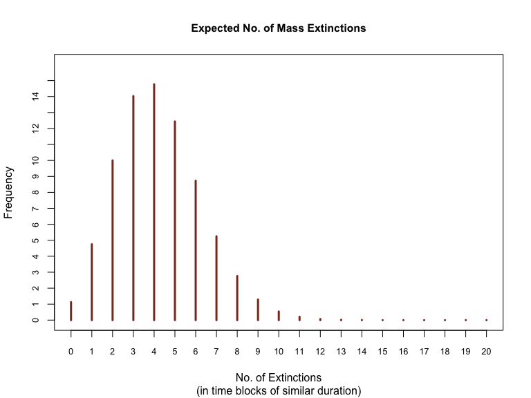
Because the observed number of extinctions start thinning at the upper end of the distribution we need to collapse the first two (0 and 1) and the top end of the distribution into an omnibus category that we can call “10 or more”. We do so below:
new.ME = c("0 or 1", "2", "3", "4", "5", "6", "7", "8 or more"); new.ME## [1] "0 or 1" "2" "3" "4" "5" "6"
## [7] "7" "8 or more"new.counts = c(tab.A[1],
tab.A[2:7],
sum(tab.A[8:14]) )
new.counts## 1 2 3 4 5 6 7
## 13 15 16 7 10 4 2 9names(new.counts) = new.ME
new.counts # now with the labels for each category## 0 or 1 2 3 4 5 6 7
## 13 15 16 7 10 4 2
## 8 or more
## 9sum(new.counts) # To verify we didn't mess up somewhere and we still have 76 extinctions## [1] 76We aren’t done yet. Since we have rearranged the grouping we will need to recalculate the expected frequencies.
x = seq(0 , 20, by = 1)
new.probs = dpois(x, 4.210526); new.probs## [1] 1.483856e-02 6.247815e-02 1.315329e-01 1.846076e-01 1.943238e-01
## [6] 1.636411e-01 1.148358e-01 6.907418e-02 3.635483e-02 1.700811e-02
## [11] 7.161307e-03 2.741170e-03 9.618139e-04 3.115187e-04 9.368982e-05
## [16] 2.629889e-05 6.920761e-06 1.714120e-06 4.009638e-07 8.885623e-08
## [21] 1.870657e-08prob.0or1 = sum(new.probs[1:2]); prob.0or1## [1] 0.07731671prob.2to7 = new.probs[3:8]; prob.2to7## [1] 0.13153293 0.18460761 0.19432379 0.16364107 0.11483583 0.06907418prob.8plus = 1 - sum(prob.0or1, prob.2to7); prob.8plus## [1] 0.06466788probs = c(prob.0or1, prob.2to7, prob.8plus); probs## [1] 0.07731671 0.13153293 0.18460761 0.19432379 0.16364107 0.11483583
## [7] 0.06907418 0.06466788sum(probs)## [1] 1Now we conduct the \(\chi^2\) test:
xsq = chisq.test(new.counts, p=probs, correct=FALSE); xsq## Warning in chisq.test(new.counts, p = probs, correct = FALSE): Chi-squared
## approximation may be incorrect##
## Chi-squared test for given probabilities
##
## data: new.counts
## X-squared = 23.95, df = 7, p-value = 0.001163xsq$observed # Observed frequencies used in the test## 0 or 1 2 3 4 5 6 7
## 13 15 16 7 10 4 2
## 8 or more
## 9xsq$expected # Expected frequencies used in the test## 0 or 1 2 3 4 5 6 7
## 5.876070 9.996503 14.030178 14.768608 12.436721 8.727523 5.249638
## 8 or more
## 4.914759You get a warning Warning message: In chisq.test(new.counts, p = probs, correct = FALSE): because one of the expected frequencies is less than 5 but we should be okay here since we need 20% of the cells to have expected frequencies \(< 5\) or at least one cell with expected frequency \(< 1\) before the \(\chi^2\) assumptions are unmet.
The \(\chi^2\) value is 23.95 with a \(p-Value = 0.001163\). This is again incorrect because of the extra degree of freedom used up when we were forced to calculate the mean of the Poisson process from the sample. The correct \(p-value\) can be calculated with one less degree of freedom as:
1 - pchisq(23.95, df=6)## [1] 0.0005334336Given the p-value we can easily reject H0; the data provide sufficient evidence to conclude that mass extinctions in the fossil record DO NOT fit a Poisson distribution.
Recall that for the Poisson distribution \(mean=variance\). Thus clumping is evident whenever the variance \(>\) the mean, and dispersion is evident whenever the variance \(<\) the mean. The mean and variance for the original extinctions data happen to be:
mean(extinct$numberOfExtinctions)## [1] 4.210526var(extinct$numberOfExtinctions)## [1] 13.71509and since the variance exceeds the mean we have clumping. What does this mean? Well, that mass extinctions appear to occur in bursts of successive time intervals rather than randomly across time. Why? Well, that is the interesting question.
The parasitic nematode Camallanus oxycephalus infects many freshwater fish, including shad. Is there evidence that nematodes do not worm their way into the fish at random?
\[H_0: \text{ Number of nematodes per fish are distributed Poisson }\] \[H_A: \text{ Number of nematodes per fish are NOT distributed Poisson }\]
shad = read.csv(url("http://whitlockschluter.zoology.ubc.ca/wp-content/data/chapter08/chap08q02ShadParasites.csv"))
observed = table(shad$numberOfParasites); observed##
## 0 1 2 3 4 5 6
## 103 72 44 14 3 1 1mean(shad$numberOfParasites)## [1] 0.9453782sum(shad$numberOfParasites)## [1] 225So on average we should have seen 0.9453 nematodes per fish. if this were true, the expected frequencies would have been:
x = seq(0, 6, by=1); x## [1] 0 1 2 3 4 5 6x.d = dpois(x, lambda=0.9453782); x.d## [1] 0.3885326001 0.3673102501 0.1736235515 0.0547133069 0.0129311919
## [6] 0.0024449734 0.0003852374sum(x.d)## [1] 0.9999411prob.1 = x.d[1:6]; prob.1## [1] 0.388532600 0.367310250 0.173623552 0.054713307 0.012931192 0.002444973prob.2 = 1 - sum(prob.1); prob.2## [1] 0.0004441261probs = c(prob.1, prob.2); probs## [1] 0.3885326001 0.3673102501 0.1736235515 0.0547133069 0.0129311919
## [6] 0.0024449734 0.0004441261sum(probs)## [1] 1expected = round(probs*238, digits=2); expected## [1] 92.47 87.42 41.32 13.02 3.08 0.58 0.11cbind(observed, expected)## observed expected
## 0 103 92.47
## 1 72 87.42
## 2 44 41.32
## 3 14 13.02
## 4 3 3.08
## 5 1 0.58
## 6 1 0.11Given the sparse frequencies for 4, 5, and 6 nematodes per fish we should collapse these categories.
new.observed = c(103, 72, 44, 14, 5)
new.probs = c(probs[1:4], sum(probs[5:7]))
Xsq = chisq.test(new.observed, p=new.probs); Xsq## Warning in chisq.test(new.observed, p = new.probs): Chi-squared
## approximation may be incorrect##
## Chi-squared test for given probabilities
##
## data: new.observed
## X-squared = 4.5707, df = 4, p-value = 0.3342Since again we’ll have to correct the degrees of freedom …
correct.pvalue = 1 - pchisq(4.5695, df=3)
correct.pvalue## [1] 0.2061742Given the high \(p-value\) we cannot reject \(H_0\); the data provide insufficient evidence to conclude that the number of nematodes per fish are NOT Poisson distributed
This is a famous data-set, the Prussian deaths due to mule-kicks (see below).
The classic Poisson example is the data set of von Bortkiewicz (1898), documenting the chance of a Prussian cavalryman being killed by the kick of a horse or a mule. Ten army corps were observed over 20 years, giving a total of 200 observations of one corps for a one year period. The period of observation is thus one year. The total deaths from horse kicks were 122, and the average number of deaths per year per corps was thus 122/200 = 0.61. In any given year, we expect to observe approximately 1 death (0.61 deaths are not possible in the real-world) but may end up seeing 0, 2, 3, 4, etc. deaths. This is the classic Poisson situation: a rare event, whose average rate is small, with observations scattered across many small intervals of time or space.
\(H_0: \text{ Number of deaths due to mule kicks are distributed Poisson }\)
\(H_A: \text{ Number of deaths due to mule kicks are NOT distributed Poisson }\)
cavalry = read.csv(url("http://whitlockschluter.zoology.ubc.ca/wp-content/data/chapter08/chap08q14Cavalry.csv"))
head(cavalry)## numberOfDeaths
## 1 0
## 2 0
## 3 0
## 4 0
## 5 0
## 6 0names(cavalry)## [1] "numberOfDeaths"tab.0 = table(cavalry); tab.0 ## cavalry
## 0 1 2 3 4
## 109 65 22 3 1The mean number of deaths from horse kicks per regiment-year can be easily calculated: 0.61. Now we can test whether these data follow the Poisson distribution.
mean(cavalry$numberOfDeaths)## [1] 0.61x = seq(0, 8, by=1); x## [1] 0 1 2 3 4 5 6 7 8x.d = dpois(x, lambda=0.61); x.d## [1] 5.433509e-01 3.314440e-01 1.010904e-01 2.055505e-02 3.134646e-03
## [6] 3.824268e-04 3.888006e-05 3.388119e-06 2.583441e-07sum(x.d)## [1] 1prob.1 = x.d[1:4]; prob.1## [1] 0.54335087 0.33144403 0.10109043 0.02055505prob.2 = 1 - sum(prob.1); prob.2## [1] 0.003559618probs = c(prob.1, prob.2); probs## [1] 0.543350869 0.331444030 0.101090429 0.020555054 0.003559618expected = probs * 200; expected ## [1] 108.6701738 66.2888060 20.2180858 4.1110108 0.7119235sum(expected)## [1] 200We will have to regroup the data because of the low expected frequencies for the top two categories. Given the few groups we need to work with I will hand-roll the regrouped data:
new.observed = c(109, 65, 22, 4)
new.probs = c(probs[1:3], sum(probs[4:5]))
Xsq = chisq.test(new.observed, p=new.probs); Xsq## Warning in chisq.test(new.observed, p = new.probs): Chi-squared
## approximation may be incorrect##
## Chi-squared test for given probabilities
##
## data: new.observed
## X-squared = 0.32352, df = 3, p-value = 0.9555Xsq$expected## [1] 108.670174 66.288806 20.218086 4.822934Note: We get a warning because ONE cell out of FOUR (i.e., 25%) have expected frequencies \(<5\). This will force us to go back and farther collapse the categories.
new.observed = c(109, 65, 26)
new.probs = c(probs[1:2], 1 - sum(probs[1:2]))
Xsq = chisq.test(new.observed, p=new.probs); Xsq##
## Chi-squared test for given probabilities
##
## data: new.observed
## X-squared = 0.062784, df = 2, p-value = 0.9691Xsq$expected## [1] 108.67017 66.28881 25.041021 - pchisq(0.0628, df=1) # the correct p-value and df## [1] 0.8021239The estimated \(\chi^2\) value is 0.0628 and since the \(p-value =\) 0.8021239 is \(> 0.05\) we fail to Reject \(H_0\); the data provide insufficient evidence to conclude that mule-kick deaths, at least for these army corps, follow the Poisson distribution.